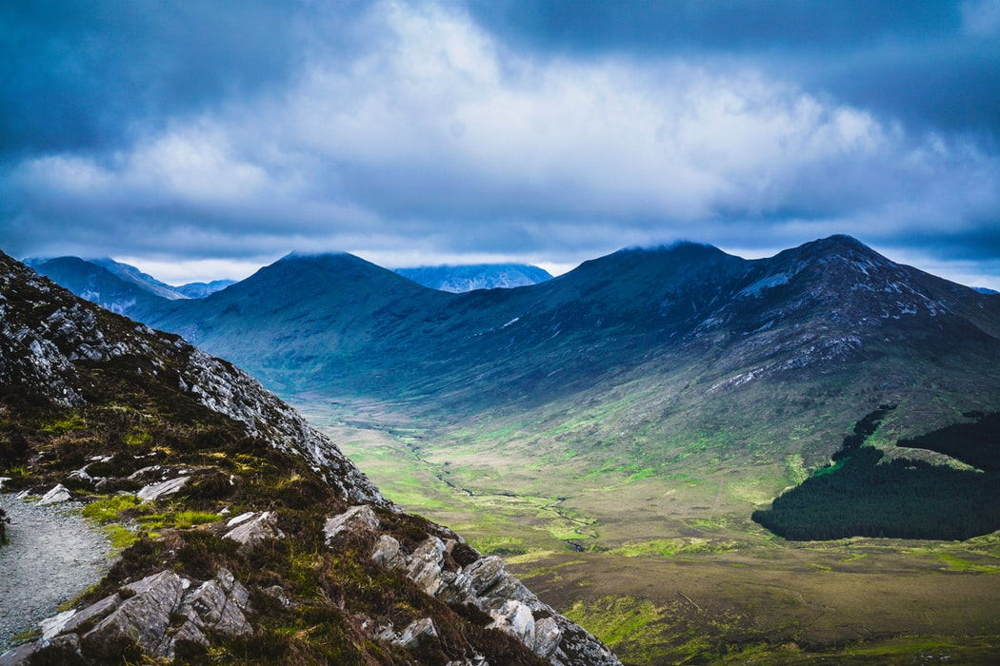

Wie ben ik
Aplicatie ontwikkelaar / 17 Jaar
Ik ben Dylan spin, 17 jaar oud en ik doe de opleiding
Aplicatie en Media ontwikkelaar. Ik ben nu in het 2 jaar van mijn opleiding.
Mijn hobbies : Films kijken - Games maken - Gamen